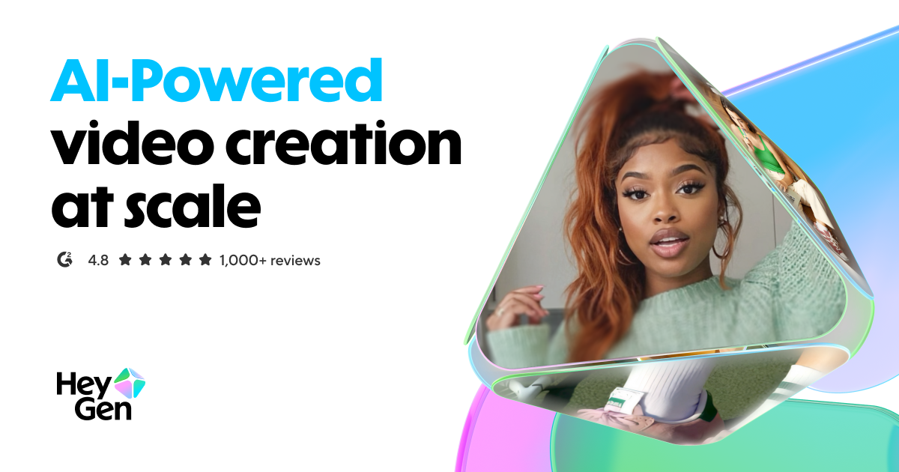

HeyGen 官方網站｜AI 影片生成、Avatar V 與 Agentic Video API
欒帥分享的是 HeyGen 官方網站。這次歸檔把首頁、`llms.txt`、開發者文件、MCP 連接方式、API 定價、安全與 Trust & Safety 頁面一起整理，作為日後評估「數字人 / AI avatar / agent 產影片」工作流時的官方參考。

官網可見重點
HeyGen 首頁標題是「Free AI Video Generator: Create Stunning Videos with AI」。Meta description 寫明可從 text、image 或 audio 生成完整影片，包含 narration、captions、visuals 與 animations。首頁主視覺宣傳 Avatar V，文案是「Say hello to Avatar V, the most lifelike avatar ever made」。
官網 schema 與首頁文字把 HeyGen 定位為 AI video generation platform：不用 camera、actors 或 studio，即可用 AI avatars、voiceovers 與 localization 建立訓練、行銷、簡報、社群短影音等內容。首頁的 structured data 也列出功能：AI avatars、talking photo、lip sync、text-to-speech、voice cloning、video translation/dubbing、subtitles、templates、custom avatars、team workspace、brand assets、API/integrations，以及 HD / Full HD / 4K export 等。
官方機器可讀資料
HeyGen 提供 `https://www.heygen.com/llms.txt`，其中把產品面整理成：
- Core platform：首頁、定價、Enterprise、Enterprise API。
- Developers & API：developer portal、API reference、SDK、CLI、MCP、webhooks、examples。
- Avatars：AI Photo Avatar、AI Video Avatar、UGC Avatars、Avatar IV、Avatar V 等。
- Translation & dubbing：Translate、AI dubbing；頁面摘要同時提到 70+ language pairs，其他地方則常以 175+ languages / dialects 描述 voice / localization 能力，應依功能上下文區分。
- Use cases：marketing、learning and development、sales、business 與 global communications。
`/.well-known/mcp.json` 在擷取時沒有回傳公開 MCP discovery JSON，而是 Next.js 404 頁。因此本文以官方 developer MCP 文件為主，不把 `.well-known` 當成可用 discovery endpoint。
開發者與 Agentic Video 能力
HeyGen Developers 頁面標題是「HeyGen Developers - AI Video API for Developers」。官方描述：可用 API 建立 avatar videos、translations 與 interactive sessions；從一支影片到 thousands of videos 的 HeyGen Cloud 批次化生產，並支援 `/videos`、`/avatars`、`/voices`、`/video-agents`、`/video-translations`、`/lipsyncs` 等 API 族群。
Quick Start 文件確認 API base URL 是 `https://api.heygen.com`，驗證使用 `X-Api-Key` header。第一次產生影片的建議路徑是呼叫 `POST /v3/video-agents`，由 Video Agent 根據 prompt 處理腳本、avatar、voice 與 render。
開發者 `llms.txt` 對 agent workflow 給出很清楚的 auth ladder：
- 若環境已有 `mcp__heygen__*` tools，先用 Remote MCP OAuth。
- 若有 HeyGen CLI 且是 API-key account，適合 scripting、batch 與 repeatable pipelines。
- 原始 API 呼叫需 `HEYGEN_API_KEY` / `X-Api-Key`，適合 production、batch 與可重複流程。
- OAuth / MCP 適合初次小規模測試，會消耗使用者既有 HeyGen plan credits；大規模或正式流量應改 API key。
MCP Overview 文件確認遠端 MCP endpoint 是 `https://mcp.heygen.com/mcp/v1/`，透過 OAuth 連接，無需本機 server 或 API key。文件列出的 MCP tools 包含 Video Agent、avatar / voice / translation / lipsync 等方向；本文未登入 HeyGen 帳號，也未執行 runtime generation，所以只歸檔文件層級能力。
定價與成本邊界
一般 pricing 頁面宣稱可從 Free $0/mo 開始，適合個人、創作者、團隊與企業。頁面 FAQ 表示 free plan 每月最多 3 支影片，付費 Creator plan 起價 $29/mo，Pro 起價 $49/mo；信用額度會依功能消耗。
開發者 self-serve API pricing 文件則是另一套 API tier / Pay-As-You-Go wallet：API key 驗證時會從 prepaid USD wallet 扣款。擷取時文件列出範例價格：
- Avatar V Digital Twin：$0.0667 / sec。
- Avatar IV：Photo Avatar $0.05 / sec；Digital Twin / Studio Avatar $0.0667 / sec。
- Avatar III：Digital Twin / Studio Avatar $0.0167 / sec；Photo Avatar $0.0433 / sec。
- Cinematic Avatar：$7.00 / video。
- Video Agent Prompt to Video：$0.0333 / sec。
實務上要區分「網頁訂閱 credit」與「API key 的 API tier wallet」；MCP/OAuth 通常走既有 plan credits，正式批次自動化則應採 API key / API billing。
安全、肖像權與使用限制
Security 頁面宣稱 HeyGen 符合 SOC 2 Type II、GDPR、CCPA、EU-US Data Privacy Framework 與 EU AI Act 等合規要求，並有歐洲 DPO。Trust & Safety 頁面強調所有 photo/custom avatars 的使用者仍須確保對人物 likeness 具有合法權利與明確同意；內容政策禁止暴力、仇恨、欺騙、性露骨、侵權、政治 campaigning、傷害未成年人、詐騙、錯誤資訊或受限商品等用途。
Trust & Safety FAQ 也說明：企業客戶資料不會被用於訓練 HeyGen AI systems；非企業客戶資料可能被用於改善服務，但可依 privacy policy opt out。這是評估企業導入或課程素材上傳時需要特別標註的資料治理差異。
實務判讀
HeyGen 已不只是「輸入文字產 avatar 影片」工具，而是逐步把影片生產拆成 agent-friendly 的 API 與 MCP 介面：腳本、voice、avatar、translation、lipsync、batch render 都能被 coding agent 或 workflow engine 串接。對 AI 學習雷達而言，它適合放在「數字人、AI 簡報、企業 training localization、agentic content pipeline」這一類工具箱中。
但歸檔時要避免過度宣稱：
- 官網和文件支持「可生成、翻譯、批次化 AI avatar 影片」，但不代表任何 prompt 都能一次產出可商用成片。
- Avatar / voice / likeness 使用牽涉肖像權、同意、品牌安全與平台審核。
- API 成本會隨 engine、resolution、duration、batch 數量、translation / lipsync 類型快速累積；應在正式工作流前先用小樣本估算。
- 本文未登入帳號、未測試 API/MCP，也沒有產生影片；所有 runtime latency、生成品質、審核速度與可用 credit 需以使用者帳號實測為準。
圖片說明
封面圖來自 HeyGen 官網 OG image。畫面左側大字寫「AI-Powered video creation at scale」，下方有 G2 4.8 rating 與 1,000+ reviews 視覺，以及 HeyGen logo；右側是類 3D 玻璃三角形中的人物 avatar / 影片畫面，搭配藍綠粉色品牌漸層。用途是官網分享預覽與品牌識別，本文已保存本地副本避免熱連外部 CDN。